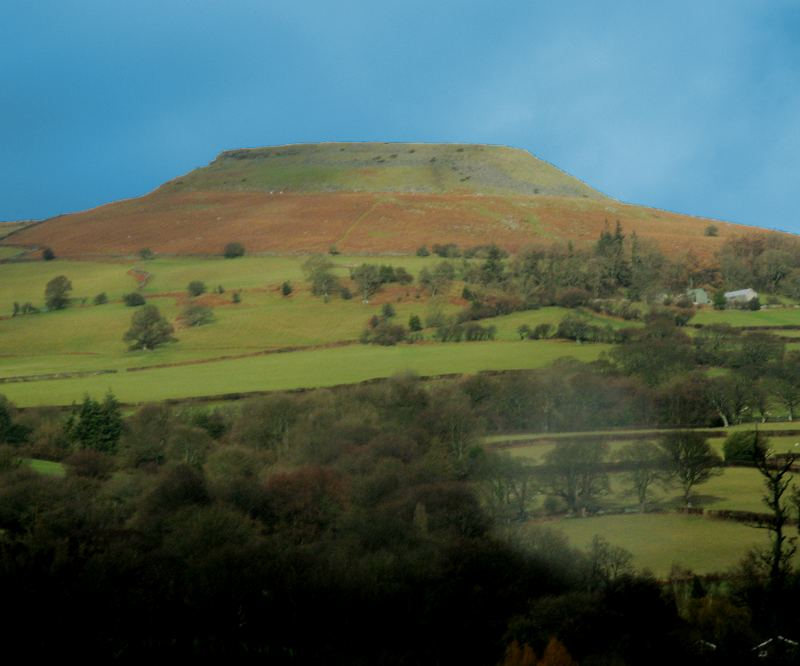

To let us know that you are coming, please register.
We have a low traffic mailing list for discussing the event. You can talk to us on BBM, also available for iOS, Android, and Jolla / Sailfish / Meego and Windows Mobile. Alternatively you can join us in IRC at #lbw on OFTC.
You can contact the organisers through email at lbw2014@xn--vdaa.be.
You may be able to find some hikers on PMR446, using channel 4, CTCSS 7.
 [% END %]